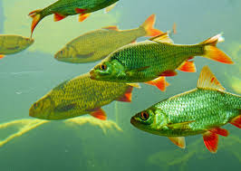

Localizada no Norte do Paraná, sul do Brasil, no terceiro planalto paranaense, e com o solo do tipo "Latossolo Roxo" que é fértil e favorece a agricultura. O município é banhado por três rios, cito: Rio Congonhas, Rio Tibagi e Rio Paranapanema que favorecem a piscicultura.

Soja
O clima e o solo favorecem seu cultivo no nosso município.

Latossolo Roxo
O solo de nosso município é muito fértil, o que favorece a agricultura, pois ele é resistente à erosão.

Ipê Amarelo
Estampado no brasão do município e presente em nossas ruas, símbolo da cidade que encanta a todos.

Peixe
Os rios que banham o município são ricos em peixes.